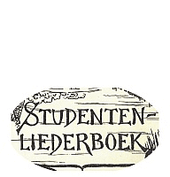

Menu
Bladeren
Alle liederen
p. 1-99
p. 100-199
p. 200-299
p. 300-399
p. 400-499
p. 500 e.v.
Taal
Nederlands
Frans
Engels
Duits
Latijn
Zuid-Afrikaans
Personen
Albrecht Rodenbach
Armand Preud'homme
Emiel Hullebroeck
Eugeen De Ridder
Jozef Simons
Philipp Silcher
René De Clercq
Stephen Foster
Meer...
Thema
Clubliederen
Ceremonies
Studentenleven
Historiek
Volk en land
Verleden
Bezinning
Were di
Pintjedrinken
Minne
Stemming en luim
NIEUWS
Rodenbach Albrecht (1856-1880)
(5)
334. Psalm
30/12/2018
348. De Blauwvoet
12/12/2018
351. Al zingen 't vrije lied
06/04/2019
352. Als de kerels te gare zijn
12/12/2018
372. Minnedrank
30/12/2018